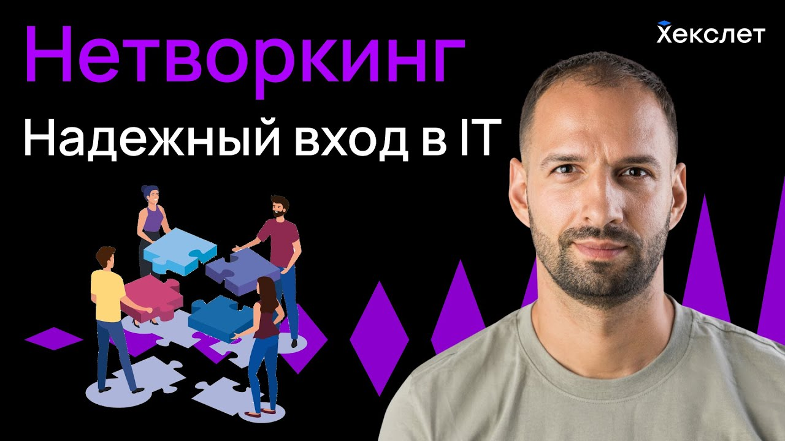
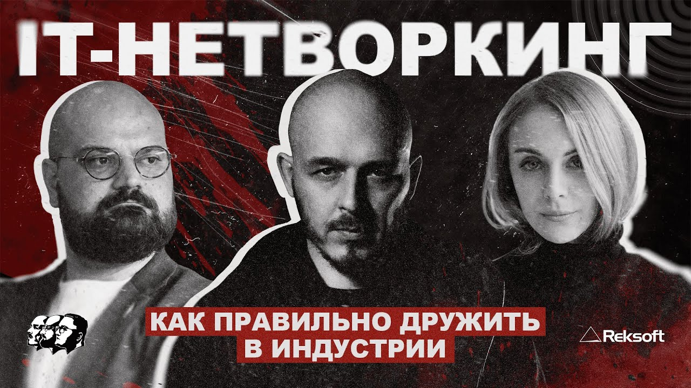
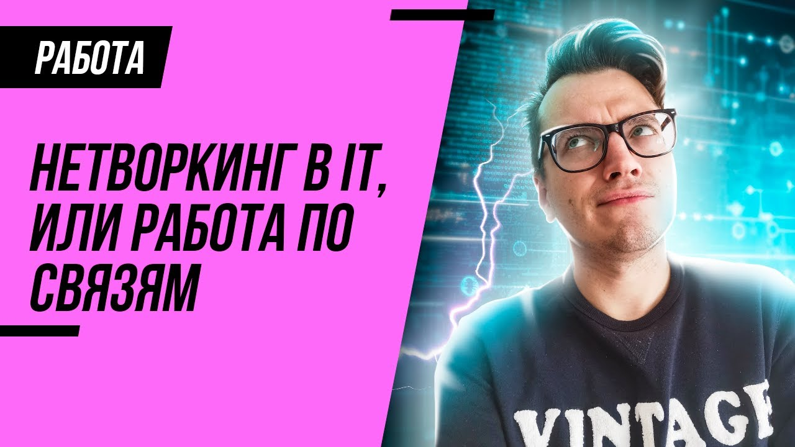
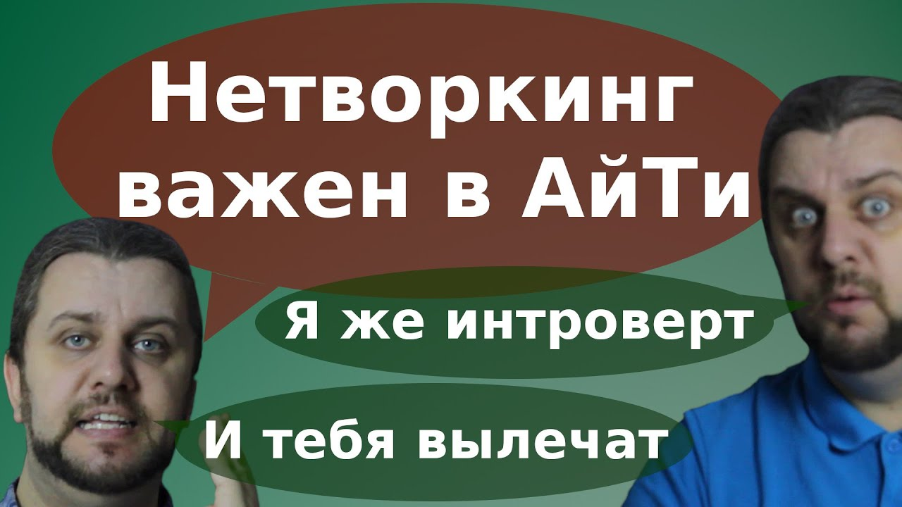
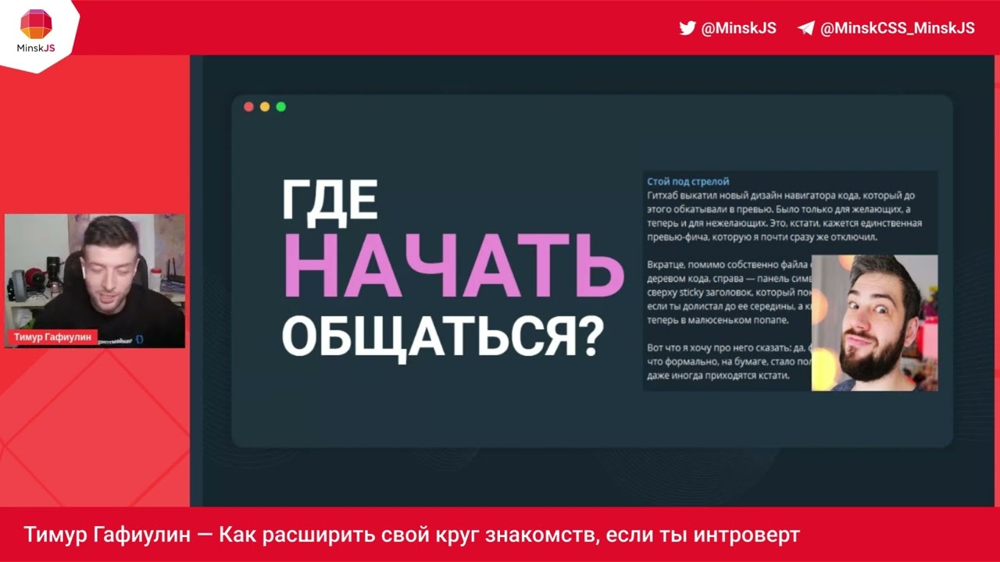
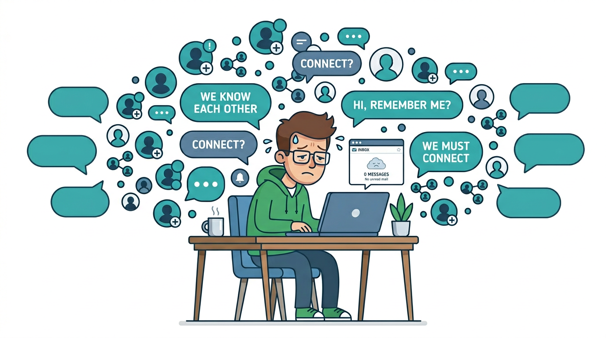

Спасибо за внимание!






В этом есть правда: меньше ощущения, что вы один на рынке, больше живого контекста — что происходит в индустрии и вакансиях.
Но есть и ловушка — перепутать это спокойствие со страховкой: будто широкий круг сам по себе гарантирует помощь и работу, когда станет тяжело.
Клич не гарантирует ответ — даже от своих.

Мой друг искал фронтенд‑разработчика. У него было резюме нашего общего знакомого, но он решил, что кандидат overqualified, и не стал его даже рассматривать.
Друг знает тебя давно, поэтому не хочет рефералить.
Текущий рынок: рефералов зачастую бросают в поток ко всем остальным откликам.
Если есть связи, можно пройти в роль даже со слабой подготовкой
Рефералка зачастую не означает, что собеса не будет или он будет особенным.
Если резюме не актуально, то рекрутер спокойно отфильтрует реферала, как и любого другого.
Часто рефералят со словами: парень классный, но про технические навыки ничего
не знаю.
Если ты качественный специалист, то, с оглядкой на рефералку, компания может предложить более подходящую вакансию.
В 2023 году я выступал 15 раз, и получил 15 офферов.
Нередко приходят предложения не по целевой роли: про контент, евангелизм или разовые активности, в том числе консультации, а не про нужный карьерный шаг.
Спикерство принесло мне роль ведущего.
Однажды мне отказали именно потому, что я спикер.
HolyJS? А что это?